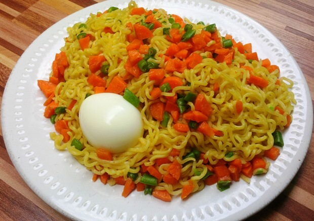

NOODLES

DESCRIPTION
noodles is a fast food common in the whole world, either rich or poor.
it is a food we cook when we are too tired to cook something heavy.
but it is very delicious
ingredients
- Noodles
- water
- salt
- oil
- vegetables (carrots, cabbage, and so on)
- boiled egg
cooking steps
- wash and cut vegetables
- boil water in a pot
- add pinch of salt
- add noodles
- stir gently to prevent sticking
- cook until soft
- add carrots,peas etc
- add cabbage
- stir gently
- use a colander to drain water
- shake gently
- serve
- pour any sauce you desire......enjoy
back home